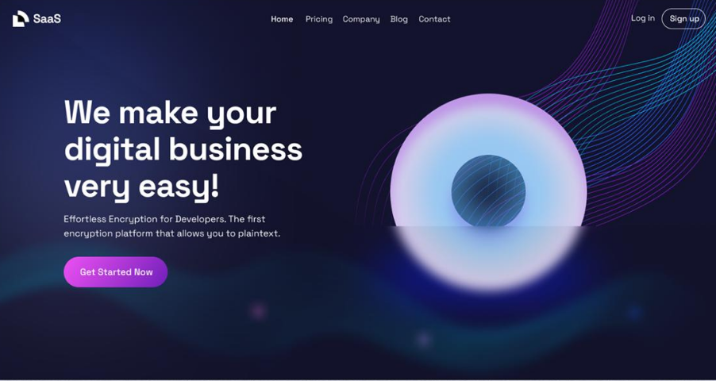

Discover how TaskFlow helps individuals, startups, and teams organize tasks, collaborate efficiently, and improve productivity.
← Back to HomeTaskFlow is a Software as a Service (SaaS) productivity platform designed to simplify project management and team collaboration. It provides a centralized workspace where users can organize tasks, monitor progress, and achieve project goals efficiently.
Create, organize, prioritize, and track tasks through an intuitive dashboard. Manage deadlines and maintain workflow efficiency with ease.
Assign responsibilities, share updates, and collaborate with team members in real time from a unified workspace.
Monitor performance through visual reports and productivity metrics that help teams make informed decisions.
Access projects securely from anywhere using desktops, tablets, or mobile devices without losing important data.

✔ Improve team productivity and efficiency.
✔ Organize projects from a centralized dashboard.
✔ Track project progress in real time.
✔ Collaborate effectively with distributed teams.
✔ Access your work securely from anywhere.
TaskFlow is a cloud-based task and project management platform that helps teams organize work and improve productivity.
Students, freelancers, startups, and enterprises can use TaskFlow to manage projects and daily tasks efficiently.
Yes. TaskFlow is fully responsive and accessible on desktops, tablets, and smartphones.
TaskFlow uses secure cloud infrastructure and modern security practices to protect user information.
Join thousands of users who trust TaskFlow to manage tasks, collaborate with teams, and achieve project goals faster.
Get Started Today